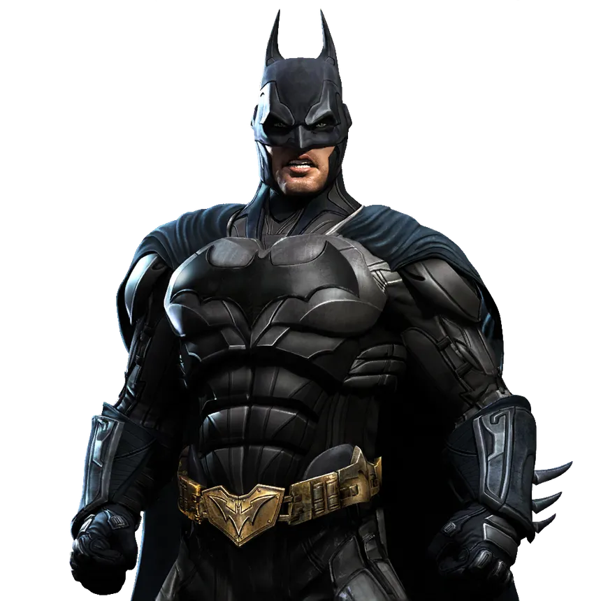
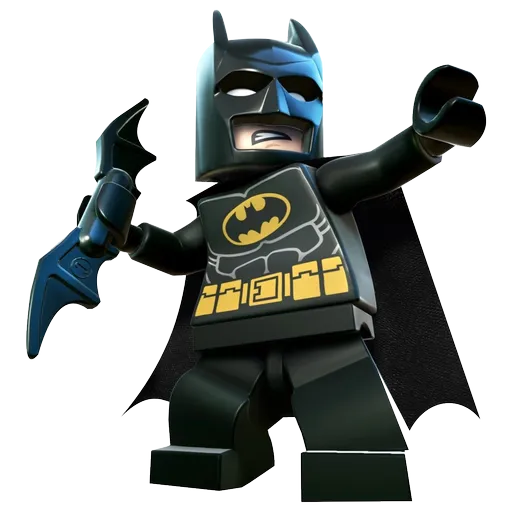
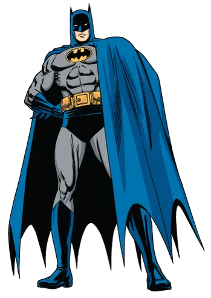

-
Arkham Origins
Descrição
Batman Arkham Origins foi o terceiro jogo da franquia Arkham, como primeiro jogo desenvolvido totalmente dublado, foi um Batman no começo de carreira mas muito violento, esta obra retrata o verdadeiro Batman das trevas.
-
batman lego
Descrição
Batman leva uma vida solitária como o herói de Gotham City. Apesar disto, ele curte bastante o posto de celebridade e o fato de sempre ser chamado pela polícia quando surge algum problema - que ele, inevitavelmente, resolve. Quando o comissário Gordon se aposenta, quem assume em seu lugar é sua filha Barbara Gordon, que deseja implementar alguns métodos de eficiência de forma que a polícia não seja tão dependente do Batman. O herói não gosta da ideia, por mais que sinta uma forte atração por Barbara. Paralelamente, o Coringa elabora um plano contra o Homem-Morcego motivado pelo fato de que ele não o reconhece como seu maior arquinimigo.
-
Batman 98
Descrição
Esta é uma versão do Batman com o traje azul, eu particulamente gosto muito dessa versão dele, como Batman, como super herói e pelos feitos que ele comente nas hq's de 1998.